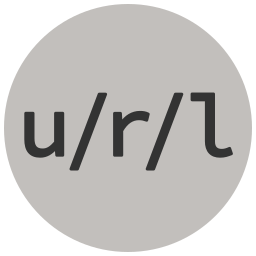

<header class="text-center pad-t-2">
  <h1 class="zetta">URL Explorer</h1>
  <p class="giga">The Open Web’s super power.</p>
  
  <a href="/url-explorer/start/" class="btn btn--subtle btn--disabled giga">To begin, navigate to<br>
    <code class="base-url"></code><kbd>start/</kbd>
  </a>
</header>

<script>
  sessionStorage.setItem('expected-url', '/');
  sessionStorage.setItem('level', '0');
</script>
